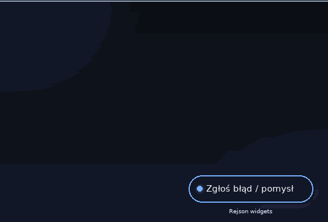
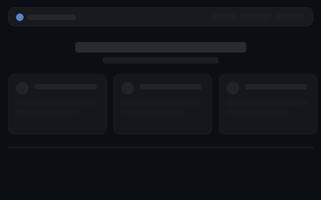

To mały widżet, który siedzi w rogu każdej strony i każdego projektu — od strony głównej
po Minecrafta czy RejStream. Jedno kliknięcie i Twój głos trafia prosto do nas. Poniżej krótka
instrukcja, wszystkie funkcje i animacje pokazujące, jak działa.
🚀 Instrukcja — krok po kroku
Kliknij pigułkę w rogu ekranu — otworzy się mały formularz.
Wybierz zakładkę: Błąd, gdy coś nie działa, albo Pomysł, gdy masz propozycję ulepszenia.
Napisz krótko, o co chodzi — projekt wybierze się sam, bo pigułka wie, gdzie jesteś. Nick możesz podać, ale nie musisz.
Kliknij „Wyślij" — gotowe! Zgłoszenie trafia na publiczną tablicę pomysłów, gdzie widać jego status aż do wdrożenia.
✨ Co potrafi
Jest wszędzie — dokleja się sama do każdego nowego projektu, bez instalacji.
Do błędów doczepia diagnostykę i logi konsoli — naprawa idzie dużo szybciej.
Przeciągniesz ją palcem lub myszą — po puszczeniu doskoczy sprężyną do najbliższej krawędzi.
Minusik zwija ją do cienkiego rąbka — nie przeszkadza; plusik przywraca ją z powrotem. Zapamiętuje wybór na zawsze.
Dopasowuje się do motywu jasnego i ciemnego.
Zgłoszenia są publiczne — trafiają na tablicę pomysłów, gdzie możesz głosować ❤ i śledzić statusy.
🎬 Zobacz w akcji animacje nagrane specjalnie na tę stronę

Zgłoszenie w 10 sekund: klik → zakładka → opis → Wyślij.

Przeciąganie ze sprężyną i zwijanie: minus → cienki rąbek, plus → wraca na swoje miejsce.
Masz swój pomysł na widżet?
Mini-ankiety, reakcje, statusy serwerów… Napisz swoją propozycję na tablicy pomysłów — najlepsze trafiają do wdrożenia.